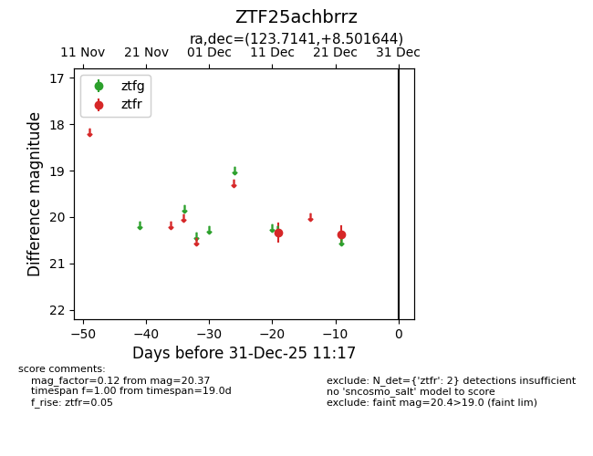
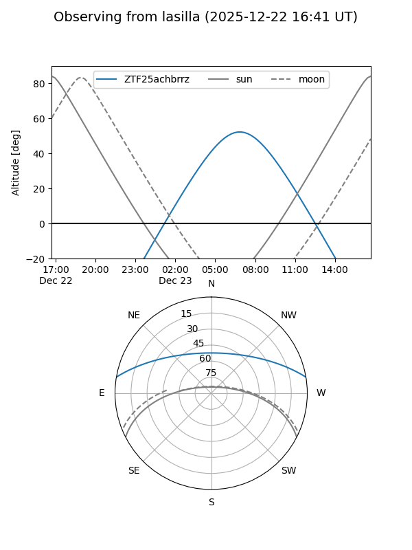
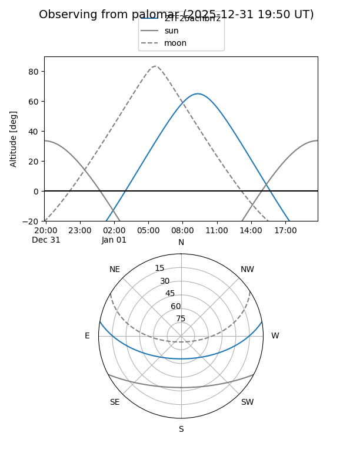

ZTF25achbrrz
Target ZTF25achbrrz at 2025-12-24 18:05
Aliases and brokers:
FINK: fink-portal.org/ZTF25achbrrz
Lasair: lasair-ztf.lsst.ac.uk/objects/ZTF25achbrrz
ALeRCE: alerce.online/object/ZTF25achbrrz
alt names
ZTF25achbrrz (ztf,fink_ztf)
Coordinates:
equatorial (ra, dec) = 123.7141,+8.50164
equatorial (HMS+DMS) = 08:14:51.38,+08:30:05.92
galactic (l, b) = (214.7274,+22.38102)
Flags:
Photometry:
last ztfr=20.37
2 ztfr detections
Lightcurve

Visibility


Additional plots